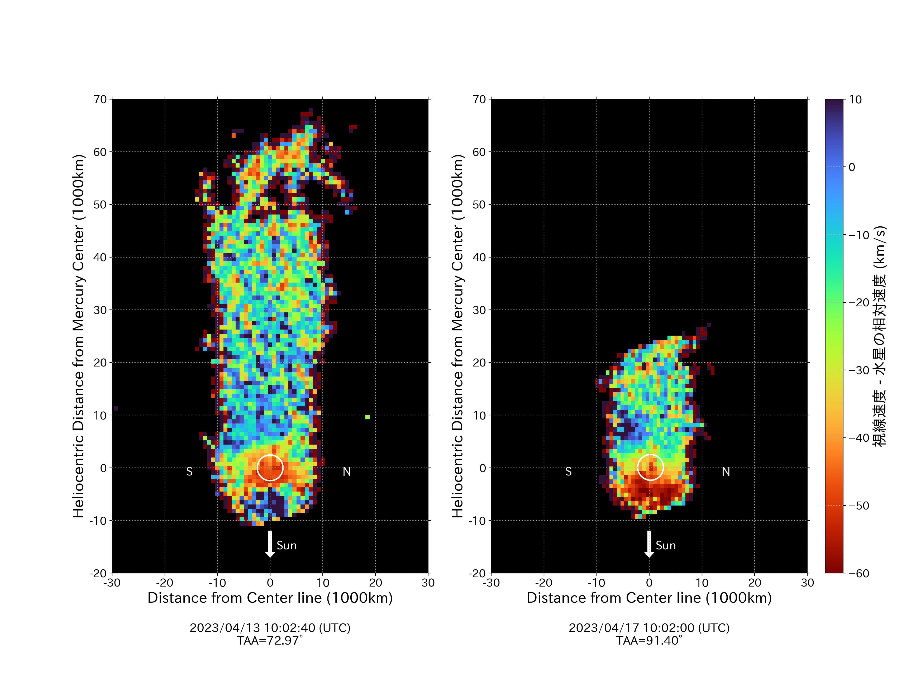

渋谷幕張高校天文部のホームページへようこそ！
このサイトは渋幕天文部の有志によって作成されたものです。ここでは渋幕天文部について深く知ってもらうことのできる様々なリソースがあります。
普段の活動
天文部の主戦場といえば夜！ときおり学校に泊まり込みで星空の観察を行います。夜のいつもと違った学校を楽しめるのも魅力の一つ！
実績
- JSEC2023協力社賞受賞
天文部 on 文化祭
渋幕校舎の入口を右に曲がってすぐのところで、毎年プラネタリウムで星座などの解説を行っています。機会があればぜひお越しください！！
最近の活動
-
JSEC2023で協力社賞受賞
JSEC2023（第21回高校生・高専生科学技術チャレンジ）に「水星ナトリウム大気と尾の形成」というテーマで参加し、阪急交通社賞をいただきました。
-
夜間観測会実施
11/18日に学校に泊まって観測をする、夜間観測会を実施しました。